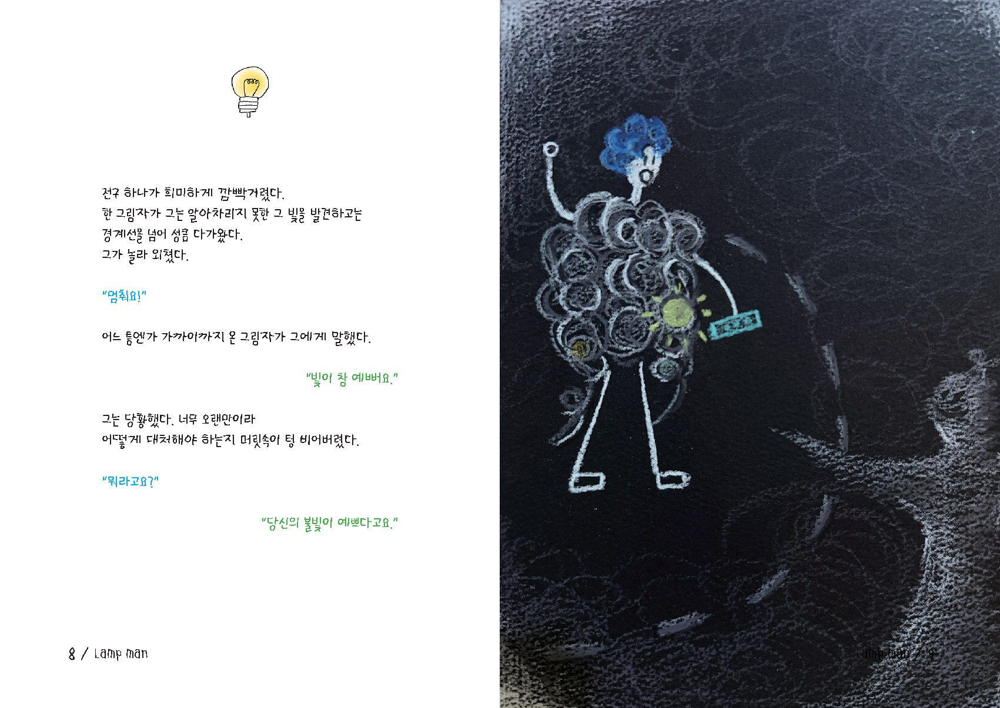
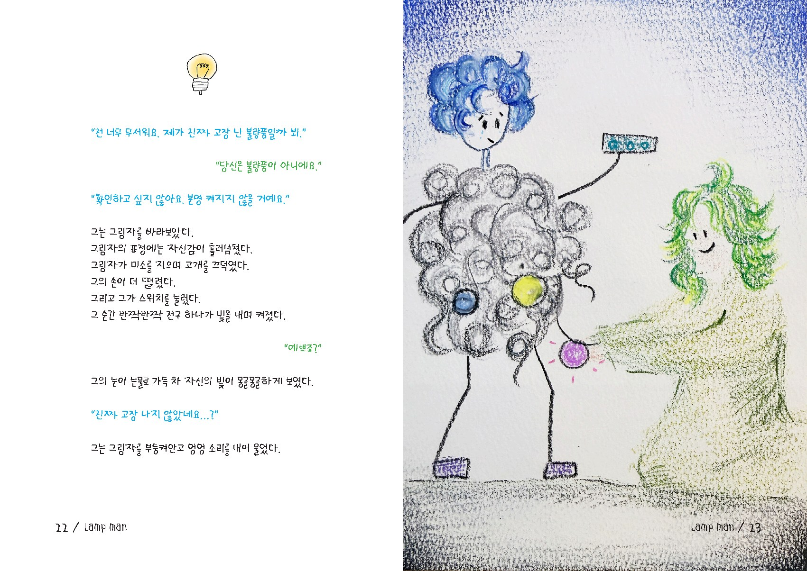

01 · STORY
빛을 잃었다고 믿는
한 사람의 이야기
어둠 속에 한 사람이 우두커니 서 있습니다. 그의 몸을 둘러싼 수많은 전구는 엉킨 전선과 먼지 속에 묻혀 있고, 빛을 잃은 전구도 제법 많습니다. 그는 자신의 전구에 더는 불이 켜지지 않을 것이라고 믿으며 스위치를 잡은 채 떨고 있습니다.
다른 사람에게 초라한 모습을 들키고 실망하는 표정을 보게 될까 두려웠던 그는 스스로 경계선을 만들었습니다. 누군가 떠나는 뒷모습을 보는 것보다 혼자가 낫다고 생각했지만, 완전히 고립되는 아픔 역시 잘 알고 있습니다.
02 · A SMALL LIGHT
“빛이 참 예뻐요”
그때 한 그림자가 그도 알아차리지 못한 희미한 불빛을 발견하고 경계선을 넘어옵니다. 대부분의 전구가 꺼져 있어도, 먼지 속에서 이제 막 켜지려는 하나의 빛을 바라봐 줍니다.

그가 미처 발견하지 못한 빛을 먼저 바라봐 준 존재
“당신의 불빛이 예쁘다고요.”
03 · THE BORDER
다가오지 못하게 만든
마음의 경계선
사람들이 잠시 머물다 떠날 때마다 그는 ‘나를 싫어한다’고 결론 내렸습니다. 설렜던 만큼 아팠고, 따뜻했던 만큼 빈자리는 더 차가웠습니다. 그래서 다치지 않기 위해 혼자를 선택하고, 자신은 고장 난 불량품이라고 믿게 되었습니다.
하지만 그림자는 묻습니다. 정말 전구가 고장 난 것인지, 아니면 실망할까 두려워 아직 스위치를 누르지 않은 것인지. 그리고 그가 다시 자신의 빛을 확인할 때까지 조용히 손을 잡아 줍니다.
04 · TOGETHER
믿어 주는 한 사람이
곁에 있다는 것
“나에게 감전될 수 있어요.
그래도 괜찮아요?”
“네.”
“나의 먼지로 당신이 더러워질 수 있어요.
그래도 괜찮아요?”
“네.”
“닦았는데 빛이 아닐 수도 있어요.
그래도 괜찮아요?”
“네, 괜찮아요. 걱정하지 마요.”

두려움을 지나 스위치를 누르자 다시 켜진 빛
05 · MESSAGE
나를 빛나게 하는
믿음에 관하여
『전구사람』은 상처받지 않기 위해 사람들과 거리를 두고, 자신의 가능성까지 꺼 버린 한 사람의 이야기입니다. 누군가 나보다 먼저 내 안의 빛을 믿어 줄 때, 우리는 두려움 속에서도 다시 스위치를 누를 용기를 얻습니다.
책은 독자에게 묻습니다. 나는 어떤 빛을 가지고 있는지, 어떤 빛을 내고 싶은지. 고장 났다고 단정했던 마음속에도 아직 누르지 않은 스위치와 다시 켜질 빛이 남아 있을 수 있다고 조용히 이야기합니다.
당신을 빛나게 하는 건
바로 당신의 믿음이랍니다.
06 · FOR READERS
이런 분께 권합니다
- 자신의 장점과 가능성을 잊어버린 분
- 관계에서 받은 상처로 마음의 경계선을 만든 분
- 다시 시작하고 싶지만 실패와 실망이 두려운 분
- 누군가의 빛을 발견하고 곁을 지켜 주고 싶은 분
07 · BOOK INFORMATION
도서 정보
- 제목
- 전구사람
- 글·그림
- 브리또리
- 펴낸곳
- 인투뎀 북스
- 출간
- 준비 중
책 문의하기 →